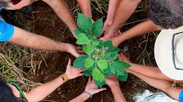
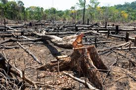

A restauração ambiental é essencial para garantir um futuro mais equilibrado e sustentável para as próximas gerações. Com o avanço do desmatamento, da poluição e das mudanças climáticas, muitos ecossistemas foram degradados, causando a perda da biodiversidade, o aumento da temperatura e a diminuição da qualidade de vida das pessoas.
Restaurar áreas degradadas significa devolver vida à natureza. Através do plantio de árvores nativas, da recuperação do solo e da proteção das nascentes, é possível reconstruir habitats naturais e fortalecer o equilíbrio dos ecossistemas. Além disso, as florestas restauradas ajudam na purificação do ar, no controle das chuvas e no sequestro de carbono, contribuindo diretamente para o combate ao aquecimento global.

A restauração também possui impacto social e econômico. Comunidades podem se beneficiar com a geração de empregos verdes, com a preservação dos recursos hídricos e com ambientes mais saudáveis para viver. Empresas e organizações que investem em recuperação ambiental demonstram responsabilidade e compromisso com o planeta.
Mais do que recuperar paisagens, restaurar é reconstruir conexões entre o ser humano e a natureza. Cada área restaurada representa esperança, equilíbrio e a possibilidade de um mundo mais verde e sustentável.